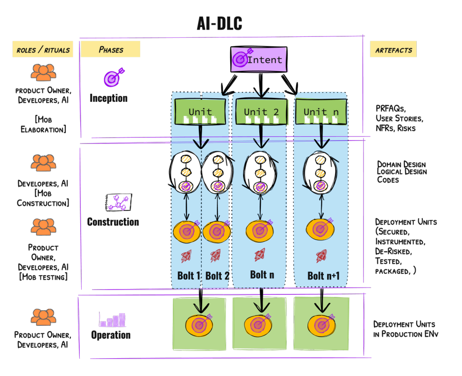
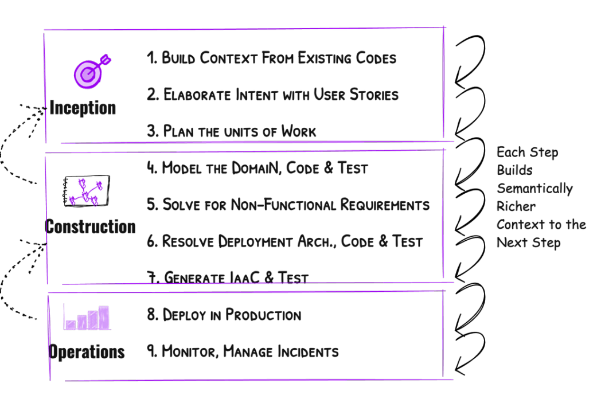

📑 목차
I. 배경
소프트웨어 엔지니어링의 진화는 개발자들이 저수준의 차별화되지 않은 작업에서 벗어나 복잡한 문제 해결에 집중할 수 있도록 하는 지속적인 여정이었습니다. 초기 기계어 코드에서 고급 프로그래밍 언어, API 및 라이브러리 채택에 이르기까지, 각 단계는 개발자 생산성을 크게 향상시켰습니다.
이제 대규모 언어 모델(LLM)의 통합은 소프트웨어 생성 방식을 혁신하여 코드 생성, 버그 감지, 테스트 생성과 같은 작업에 대화형 자연어 상호작용을 도입했습니다. 이는 AI가 세분화된 특정 작업을 향상시키는 AI 지원(AI-Assisted) 시대를 의미합니다.
AI가 발전함에 따라, 그 응용 분야는 코드 생성을 넘어 요구사항 정교화, 계획, 작업 분해, 설계, 개발자와의 실시간 협업까지 확장되고 있습니다. 이러한 변화는 AI가 개발 프로세스를 적극적으로 조율하는 AI 주도(AI-Driven) 시대를 시작하고 있습니다.
본 논문은 AI의 역량을 완전히 통합하도록 설계된 AI 네이티브 방법론인 AI 주도 개발 라이프사이클(AI-DLC)을 소개하고 정의하여, 소프트웨어 엔지니어링의 다음 진화를 위한 기초를 마련합니다.
II. 핵심 원칙
이 섹션의 원칙들은 AI-DLC를 정의하는 기초를 형성하며, 단계, 역할, 산출물, 의식(rituals)을 구체화합니다. 이러한 가정은 제안된 방법을 검증하는 데 중요하며, 설계의 근거를 제공합니다.
1. 개조가 아닌 재상상
우리는 Scrum과 같은 기존 방법(SDLC 또는 Agile)을 유지하고 AI를 끼워 맞추는 대신 개발 방법을 재상상하기로 선택합니다. 이러한 전통적인 방법은 더 긴 반복 기간(몇 달 및 몇 주)을 위해 구축되어 일일 스탠드업 및 회고와 같은 의식으로 이어졌습니다.
반면, AI를 적절히 적용하면 몇 시간 또는 며칠 단위로 측정되는 빠른 주기로 이어집니다. 이는 지속적이고 실시간 검증 및 피드백 메커니즘이 필요하며, 많은 전통적인 의식을 덜 관련성 있게 만듭니다.
💡 우리는 더 빠른 말 전차가 아닌 자동차가 필요합니다.
2. 대화 방향 역전
AI-DLC는 인간이 AI와 대화를 시작하는 대신 AI가 인간과의 대화를 시작하고 지시하는 근본적인 전환을 도입합니다.
AI는 상위 수준 의도(예: 새로운 비즈니스 기능 구현)를 실행 가능한 작업으로 분해하고, 권장 사항을 생성하고, 트레이드오프를 제안하여 워크플로를 주도합니다. 인간은 승인자 역할을 하며, 중요한 시점에서 검증하고 옵션을 선택하고 결정을 확인합니다.
3. 설계 기법을 핵심에 통합
Scrum이나 Kanban과 같은 Agile 프레임워크는 설계 기법(예: 도메인 주도 설계)을 범위 밖으로 두고 팀이 자체적으로 선택하도록 권장합니다. 이는 전반적으로 소프트웨어 품질 저하로 이어진 중요한 공백을 남겼습니다.
2022년 미국에서만 소프트웨어 품질 문제로 인한 비용이 2.41조 달러로 추정되었습니다. 설계 기법을 분리하는 대신, AI-DLC는 이를 핵심으로 통합합니다.
AI-DLC에는 도메인 주도 설계(DDD), 행동 주도 개발(BDD), 테스트 주도 개발(TDD)을 각각 따르는 팀을 위한 다양한 버전이 있을 것입니다.
4. AI 역량과 정렬
본 논문은 AI의 미래 잠재력에 대해 낙관적이지만 현재 상태에 대해 완전히 현실적입니다. AI-DLC는 현재 AI가 발전하고 있지만 아직 독립적으로 높은 수준의 의도를 실행 가능한 코드로 번역하거나 해석 가능성과 안전성을 보장하면서 인간 감독 없이 독립적으로 작동할 만큼 신뢰할 수 없다는 것을 인식합니다.
AI-DLC는 인간 참여와 현재 AI의 역량 및 한계를 균형 있게 조정하는 AI 주도(AI-Driven) 패러다임을 채택합니다. 이 방식에서 개발자는 검증, 의사 결정, 감독에 대한 궁극적인 책임을 유지합니다.
5. 복잡한 시스템 구축에 초점
AI-DLC는 지속적인 기능적 적응성, 높은 아키텍처 복잡성, 수많은 트레이드오프 관리, 확장성, 통합 및 사용자 정의 요구 사항을 요구하는 시스템 구축에 중점을 둡니다.
이는 일반적으로 대규모 및/또는 규제된 조직 내에서 응집력 있게 작업하는 여러 팀을 포함하는 고급 설계 기법, 패턴 및 모범 사례의 적용을 필요로 합니다.
6. 인간 공생을 강화하는 요소 유지
방법을 재상상하는 동안, 인간 검증 및 위험 완화에 중요한 기존 방법의 산출물과 접점을 유지할 것입니다.
예를 들어, 사용자 스토리는 인간과 AI가 무엇을 구축해야 하는지에 대한 이해를 일치시켜 잘 정의된 계약 역할을 합니다. 또 다른 예는 AI 생성 계획과 코드가 조직의 위험 프레임워크를 준수하도록 보장하는 위험 등록부(Risk Register)입니다.
7. 친숙함을 통한 전환 촉진
새로운 방법은 광범위한 교육을 요구해서는 안 되며, 기존 실무자는 하루 만에 이를 익히고 실천할 수 있어야 합니다.
연관 학습을 통한 보다 쉬운 채택을 지원하기 위해, AI-DLC는 현대화된 용어를 도입하면서 이전 방법의 익숙한 용어 간의 기본 관계를 보존합니다.
예: Scrum의 스프린트(Sprints)는 반복 주기를 나타냅니다. 그러나 스프린트는 일반적으로 4~6주 동안 지속됩니다. AI-DLC에서는 반복 주기가 지속적이고 몇 시간 또는 며칠 단위입니다. 따라서 스프린트를 Bolts로 이름을 변경하여 전례 없는 속도를 제공하는 빠르고 강렬한 주기를 강조합니다.
8. 효율성을 위한 책임 간소화
AI의 작업 분해 및 의사 결정 수행 능력을 활용하여, 개발자는 인프라, 프론트엔드, 백엔드, DevOps, 보안과 같은 전통적인 전문화 사일로를 초월할 수 있게 됩니다.
이러한 책임의 수렴은 여러 전문 역할의 필요성을 줄여 개발 프로세스를 간소화합니다. 그러나 제품 소유자와 개발자는 프레임워크에 필수적으로 남아 있으며, 감독, 검증 및 전략적 의사 결정에 대한 중요한 책임을 유지합니다.
9. 단계 최소화, 흐름 최대화
자동화 및 책임 수렴을 통해 AI-DLC는 핸드오프와 전환을 최소화하여 지속적인 반복 흐름을 가능하게 하는 것을 목표로 합니다.
그러나 인간 검증 및 의사 결정은 AI 생성 코드가 경직되지 않고('quick-cement') 향후 반복을 위해 적응 가능한 상태로 유지되도록 보장하는 데 중요합니다.
이를 해결하기 위해 AI-DLC는 중요한 결정 지점에서 인간 감독을 위해 특별히 설계된 최소한이지만 충분한 수의 단계를 통합합니다. 이러한 검증은 발생하기 전에 낭비적인 다운스트림 노력을 식별하고 정리하여 일종의 '손실 함수(loss function)'로 작용합니다.
10. 하드코딩된 독단적인 SDLC 워크플로 없음
AI-DLC는 다양한 개발 경로(예: 새로운 시스템 개발, 리팩토링, 결함 수정 또는 마이크로서비스 확장)에 대한 독단적인 워크플로를 규정하지 않습니다.
대신 AI가 주어진 경로 의도에 따라 레벨 1 계획을 권장하는 진정한 AI 우선 접근 방식을 채택합니다. 인간은 AI와의 대화형 대화를 통해 이러한 AI 생성 계획을 확인하고 조정합니다.
III. 핵심 프레임워크
이 섹션은 AI-DLC의 핵심 프레임워크를 설명하며, 단계, 역할, 워크플로 및 주요 산출물을 상세히 다룹니다.
1. 산출물 (Artifacts)
의도 (Intent)
AI-DLC의 의도(Intent)는 비즈니스 목표, 기능 또는 기술 결과(예: 성능 확장)이든 달성해야 할 것을 캡슐화하는 높은 수준의 목적 진술입니다.
이는 AI 주도 분해를 통해 실행 가능한 작업으로 전환하는 시작점 역할을 하며, 인간의 목표를 AI 생성 계획과 일치시킵니다.
유닛 (Unit)
유닛(Unit)은 의도에서 파생된 응집력 있고 자체 포함된 작업 요소로, 측정 가능한 가치를 제공하도록 특별히 설계되었습니다.
예를 들어, 비즈니스 아이디어를 구현하는 의도는 DDD의 하위 도메인 또는 Scrum의 에픽과 유사한 독립적인 기능 블록을 나타내는 유닛으로 분해될 수 있습니다.
각 유닛은 기능적 범위를 명시하는 일련의 작업(이 경우 사용자 스토리)을 포함합니다. AI-DLC의 맥락에서 의도를 유닛으로 분해하는 프로세스는 AI에 의해 주도되며, 개발자 및/또는 제품 소유자가 결과 유닛을 검증하고 개선하여 비즈니스 및 기술 목표와의 일치를 보장합니다.
💡 유닛은 느슨하게 결합되어 있어 자율적인 개발과 다운스트림에서의 독립적인 배포가 가능합니다.
볼트 (Bolt)
볼트(Bolt)는 AI-DLC의 가장 작은 반복으로, 유닛 또는 유닛 내 작업 세트의 빠른 구현을 위해 설계되었습니다.
볼트(Scrum의 스프린트와 유사)는 몇 주가 아닌 몇 시간 또는 며칠 단위로 측정되는 빌드-검증 주기로 강렬한 집중과 고속 제공을 강조합니다.
각 볼트는 잘 정의된 작업 범위(예: 유닛 내의 사용자 스토리 모음)를 캡슐화하여 지원하는 유닛의 전반적인 목표와의 일치를 유지하면서 점진적인 진행을 가능하게 합니다.
유닛은 하나 이상의 볼트를 통해 실행될 수 있으며, 이는 병렬 또는 순차적으로 실행될 수 있습니다. AI가 볼트를 계획하고 개발자/제품 소유자가 이를 검증합니다.
도메인 설계 (Domain Design)
도메인 설계 산출물은 인프라 구성 요소와 독립적으로 유닛의 핵심 비즈니스 로직을 모델링합니다.
AI-DLC의 첫 번째 버전에서 AI는 도메인 주도 설계 원칙을 사용하여 다음을 포함한 전략적 및 전술적 모델링 요소를 생성합니다:
- 집합체 (Aggregates)
- 값 객체 (Value Objects)
- 엔티티 (Entities)
- 도메인 이벤트 (Domain Events)
- 리포지토리 (Repositories)
- 팩토리 (Factories)
논리 설계 (Logical Design)
논리 설계는 적절한 아키텍처 설계 패턴(예: CQRS, Circuit Breakers 등)을 선택하여 비기능 요구 사항을 충족하도록 도메인 설계를 확장하여 변환합니다.
AI는 개발자의 검증을 위해 아키텍처 결정 기록(ADRs)을 생성합니다. 논리 설계 사양을 통해 AI는 적절한 AWS 서비스와 구성을 선택하여 잘 설계된 원칙을 준수하는 코드 및 단위 테스트를 생성합니다.
이 단계에서 AI 에이전트는 단위 테스트를 수행하고 결과를 분석하며 개발자에게 수정 사항에 대한 권장 사항을 제공합니다.
배포 유닛 (Deployment Units)
배포 유닛은 다음을 포함하는 운영 산출물입니다:
- 패키지된 실행 가능 코드 (예: Kubernetes 환경용 컨테이너 이미지, AWS Lambda와 같은 서버리스 함수)
- 구성 (예: Helm Charts)
- 인프라 구성 요소 (예: Terraform 또는 CFN 스택)
이들은 기능 수용, 보안, NFR 및 기타 위험에 대해 테스트됩니다. AI는 기능 테스트, 정적 및 동적 보안 테스트, 부하 테스트 시나리오를 포함한 모든 관련 테스트를 생성합니다.
인간이 테스트 시나리오와 케이스를 검증하고 조정한 후, AI 에이전트는 테스트 제품군을 실행하고 결과를 분석하며 실패 지점을 코드 변경, 구성 또는 기타 종속성과 상관시킵니다.
2. 단계 및 의식 (Phases & Rituals)
🚀 시작 단계 (Inception Phase)
시작 단계는 의도를 포착하고 이를 개발을 위한 유닛으로 변환하는 데 중점을 둡니다. 이 단계는 "몹 정교화(Mob Elaboration)"라는 협업 요구사항 정교화 및 분해 의식을 사용합니다.
몹 정교화 (Mob Elaboration)
이는 퍼실리테이터가 이끄는 공유 화면이 있는 단일 방에서 이루어집니다. 몹 정교화 중에 AI는 도메인 지식과 느슨한 결합 및 높은 응집력의 원칙을 활용하여 의도를 사용자 스토리, 수용 기준 및 유닛으로 초기 분해를 제안하는 중심 역할을 합니다.
제품 소유자, 개발자, QA 및 기타 관련 이해관계자(몹)는 협력하여 이러한 AI 생성 산출물을 검토하고 개선하며, 과소 설계되거나 과도하게 설계된 부분을 조정하고 실제 제약 조건과 일치시킵니다.
📦 산출물:
- 잘 정의된 유닛 및 각각의 구성 요소:
- PRFAQ
- 사용자 스토리
- 비기능 요구사항(NFR) 정의
- 위험 설명 (조직의 위험 등록부와 일치하는 경우)
- 비즈니스 의도를 추적하는 측정 기준
- 유닛을 구성하는 데 사용할 수 있는 제안된 볼트
💡 몹 정교화는 몇 주 또는 심지어 몇 달의 순차적 작업을 몇 시간으로 압축하면서 몹 내부 및 몹과 AI 간의 깊은 일치를 달성합니다.
🔨 구축 단계 (Construction Phase)
구축 단계는 작업의 반복적 실행을 포함하여 시작 단계에서 정의된 유닛을 테스트되고 운영 준비가 된 배포 유닛으로 변환합니다.
프로세스 흐름:
- 도메인 설계: AI가 기술적 고려 사항과 독립적으로 비즈니스 로직을 모델링
- 논리 설계: 비기능 요구사항 및 적절한 클라우드 설계 패턴 적용
- 코드 생성: AI가 구성 요소를 적절한 AWS 서비스에 매핑하여 상세한 코드 생성
- 자동화된 테스트: 기능, 보안 및 운영 준비 상태 보장
개발자는 각 단계에서 AI 생성 출력을 검증하고 중요한 결정을 내리는 데 집중하여 각 반복에서 품질과 적응성을 보장합니다.
브라운필드 시나리오:
기존 애플리케이션 시나리오에서 구축 단계는 먼저 코드를 의미론적으로 풍부한 모델링 표현으로 상승시켜 AI에 대한 컨텍스트가 간결하고 정확하도록 합니다.
제안된 모델링 표현:
- 정적 모델: 도메인 구성 요소, 책임 및 관계만
- 동적 모델: 중요한 사용 사례를 실현하기 위해 구성 요소가 상호 작용하는 방법
몹 구축 (Mob Construction)
AI-DLC는 몹 정교화와 유사하게 모든 팀이 단일 방에 함께 배치되어 이 작업을 수행할 것을 권장합니다. 팀은 통합 사양(도메인 모델 단계에서)을 교환하고 결정을 내리고 볼트를 제공합니다.
⚙️ 운영 단계 (Operations Phase)
AI-DLC의 운영 단계는 AI를 활용하여 운영 효율성을 높이는 시스템의 배포, 관찰 가능성 및 유지 관리에 중점을 둡니다.
AI의 역할:
- 텔레메트리 분석: 메트릭, 로그 및 추적을 적극적으로 분석하여 패턴 감지, 이상 징후 식별, 잠재적 SLA 위반 예측
- 사전 대응: 사전 정의된 인시던트 런북과 통합하여 리소스 확장, 성능 튜닝 또는 장애 격리와 같은 실행 가능한 권장 사항 제안
- 자동 실행: 개발자가 승인하면 해결 방안 실행
개발자는 검증자 역할을 하여 AI 생성 인사이트와 제안된 조치가 SLA 및 규정 준수 요구 사항과 일치하도록 보장합니다.
3. 워크플로
📊 AI-DLC 워크플로
비즈니스 의도(예: 그린필드 개발, 브라운필드 개선, 현대화 또는 결함 수정)가 주어지면, AI-DLC는 의도를 구현하기 위한 워크플로를 설명하는 레벨 1 계획을 생성하도록 AI에 프롬프트하는 것으로 시작합니다.
이 계획은 초기 제안 역할을 하며, 인간에 의해 투명하게 검토, 검증 및 개선되어 비즈니스 목표 및 엔지니어링 제약 조건과의 일치를 보장합니다.
핵심 원칙:
- 각 단계에서 인간 감독을 적용하여 산출물을 점진적으로 풍부하게 하여 다음 단계를 위한 의미론적으로 풍부한 컨텍스트로 변환
- 각 단계는 전략적 결정 지점 역할을 하며, 인간 감독은 손실 함수처럼 작동 - 다운스트림으로 눈덩이처럼 커지기 전에 오류를 조기에 포착하고 수정
- 레벨 1 계획의 각 단계는 AI에 의해 더 세밀한 실행 가능한 하위 작업으로 분해되며, 정확성과 맥락적 적절성을 보장하기 위해 인간 감독 하에
- 생성된 모든 산출물(의도, 사용자 스토리, 도메인 모델 또는 테스트 계획)은 지속되며 AI가 라이프사이클 전반에 걸쳐 참조하는 "컨텍스트 메모리" 역할
💡 전통적인 SDLC 방법과 마찬가지로 AI-DLC는 본질적으로 반복적이며, 지속적인 개선과 적응을 허용합니다.
IV. AI-DLC 실전: 그린필드 개발
제품 소유자가 "교차 판매 제품을 위한 추천 엔진 개발"과 같은 높은 수준의 의도를 명시하여 프로세스를 시작하는 시나리오를 살펴보겠습니다.
AI는 이를 새로운 애플리케이션을 구축하려는 의도로 인식하고 레벨 1 계획을 생성합니다. 팀이 검증하고 레벨 1 계획의 단계를 추가/수정합니다. 최종 레벨 1 계획을 통해 AI는 시작 단계로 진행합니다.
1. 시작 단계
몹 정교화 의식의 주요 상호작용:
- AI가 명확한 질문을 함 (예: "주요 사용자는 누구입니까? 이것이 달성해야 하는 주요 비즈니스 결과는 무엇입니까?")
- AI가 명확해진 의도를 사용자 스토리, NFR 및 위험 설명으로 정교화
- AI가 높은 응집력을 가진 스토리를 유닛으로 구성 (예: "사용자 데이터 수집", "추천 알고리즘 선택", "API 통합")
- 제품 소유자가 이러한 출력을 검증하고 유닛을 개선하기 위해 필요한 곳에서 조정
- AI가 모듈에 대한 PRFAQ를 생성 (선택사항)
- 개발자와 제품 소유자가 PRFAQ 및 관련 위험을 검증
2. 구축 단계
몹 프로그래밍 및 몹 테스팅 의식:
- 세션 시작: 개발자가 AI와 세션을 설정. AI가 할당된 유닛으로 시작하도록 프롬프트
- 도메인 모델링: AI가 DDD 원칙을 사용하여 할당된 유닛의 핵심 비즈니스 로직 모델링
- 검증: 개발자가 도메인 모델을 검토하고 검증하며, 비즈니스 로직을 개선하고 실제 시나리오와의 일치 보장
- 논리 설계: AI가 도메인 모델을 논리 설계로 변환하여 NFR 적용 (예: 확장성, 장애 허용)
- 아키텍처 결정: 개발자가 AI의 권장 사항을 평가하고 트레이드오프를 승인하며 필요한 경우 추가 고려 사항 제안
- 코드 생성: AI가 각 유닛에 대해 실행 가능한 코드를 생성하고 논리 구성 요소를 특정 AWS 서비스에 매핑
- 테스트 생성: AI가 기능, 보안 및 성능 테스트를 자동 생성
- 코드 검토: 개발자가 생성된 코드와 테스트 시나리오/케이스를 검토하고 품질과 규정 준수를 보장하기 위해 필요한 조정 수행
테스트 및 검증:
- AI가 모든 테스트를 실행하고 결과를 분석하며 문제를 강조
- 실패한 테스트에 대한 수정 제안 (예: 더 나은 성능을 위해 쿼리 로직 최적화)
- 개발자가 AI의 발견 사항을 검증하고 수정을 승인하며 필요에 따라 테스트를 다시 실행
3. 운영 단계
배포:
- AI가 모듈을 배포 유닛(예: 컨테이너 이미지, 서버리스 함수)으로 패키징
- 개발자가 배포 구성을 승인하고 스테이징 및 프로덕션 환경으로의 롤아웃 시작
관찰 가능성 및 모니터링:
- AI가 메트릭, 로그 및 추적을 분석하여 이상 징후를 식별하고 잠재적 SLA 위반 예측
- AI가 플레이북과 통합하여 운영 문제에 대한 조치 제안
- 개발자가 AI의 권장 사항을 검증하고 완화 조치를 승인하며 해결 결과 모니터링
V. AI-DLC 실전: 브라운필드 개발
브라운필드는 새로운 기능 추가, 비기능 요구사항 최적화 또는 리팩토링 및 결함 수정을 포함한 기술 부채 수정 측면에서 기존 시스템을 변경하는 것을 의미합니다.
이 맥락에서 제품 관리자가 기존 애플리케이션에 새로운 기능을 추가해야 하는 시나리오를 살펴보겠습니다.
1. 시작 단계
브라운필드의 시작 단계 활동은 그린필드와 동일합니다.
2. 구축 단계
- 코드 상승: AI가 코드를 더 높은 수준의 모델링 표현으로 상승시킵니다. 모델은 정적 모델(구성 요소, 설명, 책임 및 관계)과 동적 모델(가장 중요한 사용 사례를 실현하기 위해 구성 요소가 상호 작용하는 방법)로 구성됩니다.
- 검증: 개발자가 제품 관리자와 협력하여 AI에 의해 역 엔지니어링된 정적 및 동적 모델을 검토, 검증 및 수정합니다.
- 구축 계속: 이러한 추가 단계를 통해 나머지 구축 단계는 그린필드 시나리오와 유사합니다.
3. 운영 단계
브라운필드의 운영 단계 활동은 그린필드와 동일합니다.
VI. AI-DLC 도입
AI-DLC는 기존 Agile 방법에서 크게 벗어나지 않으며 더 쉬운 채택을 주요 결과로 설계되었습니다. 그러나 전통적인 방법을 오랫동안 실천해 온 조직과 자체 AI 네이티브 방법 변형을 발명하는 과정에 있는 조직은 AI-DLC를 채택하기 위한 구체적인 전략이 필요합니다.
채택 접근 방식
a. 실천을 통한 학습 (Learning by Practicing)
AI-DLC는 실제로 그룹으로 실천할 수 있는 일련의 의식(몹 정교화, 몹 구축 등)입니다.
문서와 전통적인 교육을 통해 방법을 배우는 대신, 실무자들이 현재 해결하고 있는 여러 실제 시나리오에서 AI-DLC 가이드와 함께 의식을 실천하도록 할 것입니다.
AWS 솔루션 아키텍트는 대규모 조직에서의 대규모 채택을 위해 이 접근 방식을 패키징한 AI-DLC Unicorn Gym이라는 현장 제안을 만들었습니다.
b. 새로운 개발자 경험 도구에 AI-DLC 내장
고객들은 SDLC 전반에 걸쳐 통합된 경험을 제공하는 자체 오케스트레이션 도구를 구축하고 있습니다.
예시:
- Cognizant의 FlowSource
- Aspire의 CodeSpell
- HCL의 AIForce
이러한 도구에 AI-DLC를 내장함으로써, 대규모 조직의 개발자는 중요한 채택 드라이브 없이 원활하게 AI-DLC를 실천할 것입니다.
부록 A: 프롬프트 예시
AI-DLC를 실천하기 위해 AI와 상호작용하는 데 다음 프롬프트를 사용할 수 있습니다.